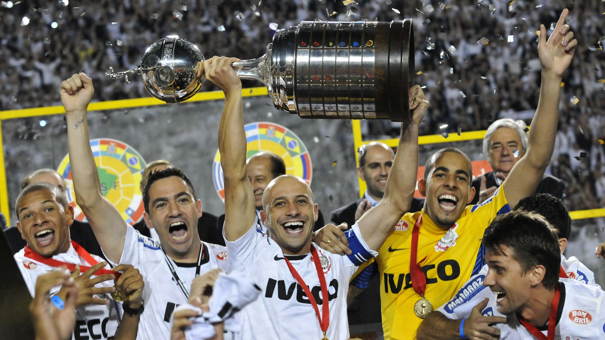
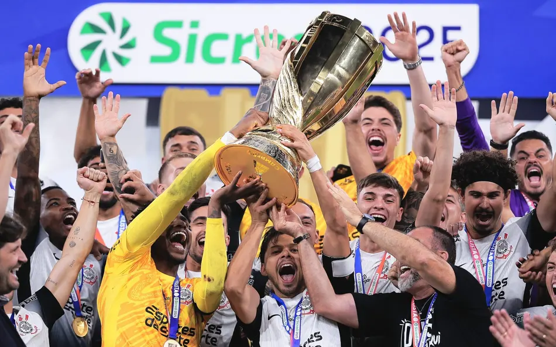

Grandes Feitos do Timão

Mundial 2000
Primeiro campeão mundial de clubes da FIFA. Um marco na história do futebol.

Libertadores 2012
Invicto, o Timão conquistou sua primeira Libertadores de sua historia com raça e tradição.

Mundial 2012
Derrotou o Chelsea no Japão ao olhar de milhões de torcedores e confirmou sua supremacia global.

Títulos Nacionais
7 Campeonatos Brasileiros e 31 Paulistas(Sendo um esse ano): O clubes mais vitoriosos do Brasil.